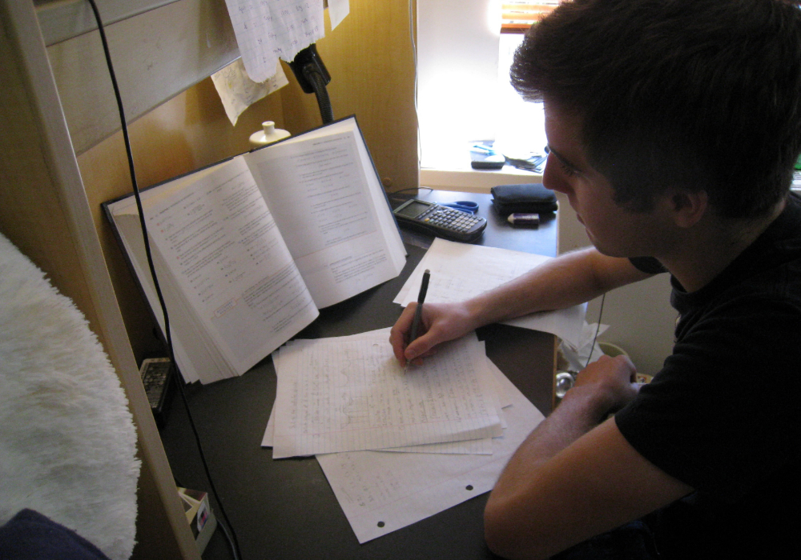

VERİMLİ DERS ÇALIŞMA TAKTİKLERİ

Ders çalışma programı yapmak
Yemek yemeye ve uyumaya nasıl zaman ayırıyorsanız çalışmaya da ayırın. Günden güne aynı programı sadık kalın.
Çalışma için gereken süre, konuyla ilgili becerilere bağlı olarak her birey için değişecektir. Okulda olduğun zaman için evde ortalama 2 saat ders çalışmak gerekir.
Unutmayı önlemek için düzgün notlar almak
Öğretmenleriniz derste önemli yerleri vurgularken hemen onu not edin.Notlar olmadan tüm konuları tekrar çalışmanız gerekir.
Bir oturuşta sayfalar dolusu eziyet çekersiniz.İyi not tutarsanız,önemli terimlerden hemen hatırlayabilirsiniz.
Not almak için harcadığınız zaman kaybolmaz,aslında zamandan tasarruf sağlar.
Rahat bir ortamda çalışmak
Eğer konsantrasyon sorununuz varsa, doğru ortam size çok yardımcı olacaktır. Çalışma masanız sessiz bir yerde olmalı.
Dikkat bozacak şeyler varsa ortadan kaldırılmalı.Her gün aynı yerde ders çalıştığınızda daha iyi konsantre olacaksınız. Bu bir zihin alışkanlığıdır.
Mesela nasıl mutfak masasına oturduğunuzda yemek yemeyi bekliyorsunuz,rahat bir sandalyeye oturduğunuzda televizyon seyredersiniz vb.
Her gün aynı yerde çalışma alışkanlığını geliştirmek konsantrasyonunuzu geliştirecektir.
Kendini ödüllendir
Güzelce çalıştıktan sonra kendinizi ödüllendirerek,ders çalışma ve ödül arasında bilinçaltına bağlatı kurabilirsiniz.
Mesela,iki saatlik ders çalışmasından sonra kendinize en sevdiğiniz oyundan 1-2 el oynamaya izin verin.Sizi motive edebilecek ne varsa onu kullanın.
Bu ders çalışma ve ödül döngüsü doğru yapılırsa,çalıştığınız bilgiler daha akılda kalıcı olur.
Gecelerden gündüzlere kadar ders çalışmayı bırakın
Vücudumuzun iyi bi şekilde çalışması ve dinlenmesi için zamana ihtiyaç vardır.
Biz dinlenirken,beynimiz gün boyunca topladığımız bilgileri hafızada güçlendirir.Verimli çalışmak için uyku şarttır.
Parça parça ilerleyin
Acele etmeyin.Hızlı hızlı 10 dakikada 2 konu çalışırım derseniz yüksek ihtimal biraz sonra hiçbişey hatırlamayacaksınız.
Her bölümü odaklanarak yavaşça çalışın ve anladığınızdan emin olup diğer bölüme geçin.
Rahatlatıcı müzik dinleyin
İstediğiniz herhangi bir müziği dinleyebilirsiniz.Genelde enstrüman sesleri,doğa sesi yağmur sesi gibi sesler iyi bir fon müziği oluşturduğundan
derse odaklanmaya yardım eder.Sözlü şarkılar dikkat dağıtıcı olabilir.